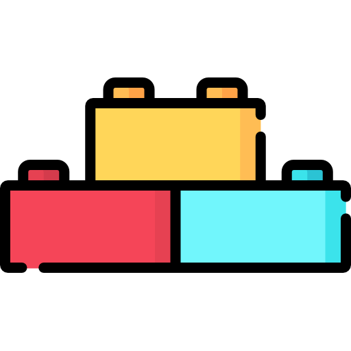
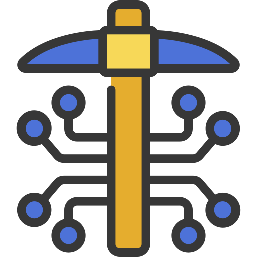

Belajar
Get in TouchPengertian Blockchain Techonology
Teknologi Blockchain paling sederhana didefinisikan sebagai distribusi buku besar yang terdesentralisasi yang mencata sumber aset digital. Dengan desain yang melekat, data pada Blokchain tidak dapat dimodifikasi, yang menjadikannya pengganggu yang sah untuk industri pembayaran, keamanan siber dan perawatan kesehatan. Panduan kami akan memandu anda melalui apa itu, bagaimana penggunaannya, dan sejarahnya

Apa Itu Teknologi Blockchain?
Blockchain sederhananya mendistribusikan secara sentral yang transparantBlockchain, terkadang merujuk ke sebuah Distributed Ledger Technology (DLT), membuat sejarah dari setiap asset digital yang tidak dapat diubah dan transparant melalui penggunaan desentralisasi dan hash kriptografi

Sebuah analogi sederhana untuk memahami teknologi Blockchain adalah sebuah Google Doc. Ketika kita membuat sebuah dokumen dan membagikannya dengan sekelompok orang, dokumen tersebut terdistribusikan alih-alih tersalin atau dikirimkan. Hal ini membuat rantai desentralisasi distribusi yang memberikan semua orang akses ke dokumen di waktu yang sama. Tidak ada yang terkunci menunggu perubahan dari orang lain, sementara semua modifikasi ke dokumen sudah terekam secara real-time, membuat setiap perubahan benar-benar tranparant
Tentu saja, Blokchain lebih rumit daripada Google Doc, tetapi analoginya sama karena mengilustrasikan ide kritis dari teknologi
PENJELASAN SINGKAT
Sebuah blockchain merupakan sebuah database yang memberikan block terenkripsi dari data kemudian mengaitkannya secara bersamaan untuk membentuk kronologi single-source-of-truth kepada data
Asset digital terdistribusi alih-alih tersalin atau terkirim, membuat sebuah rekaman yang tidak dapat dibuah dari sebuah asset
Asset sudah terdesentralisasi, memungkinkan akses real-time penuh dan transparant ke public
perubahan buku besar yang tranparant menjaga integritas dokumen, yang mana menciptakan kepercayaan terhadap asset
Langkah-langkah yang melekat pada blockchain dan buku besar public membuatnya teknologi utama untuk hampir setiap masing-masing sektor
Blockchain adalah terknologi yang sangat menjanjikan dan revolusioner karena membantu mengurangi risiko, memberantas penipuan, dan menghadirkan transparansi dengan cara yang terukur untuk berbagai penggunaan.
Blockchain terdiri dari tiga bagian

Blocks
Setiap rantai terdiri dari beberapa blok dan setiap blok memiliki tiga elemen dasar:
-
Data di blok.
-
Bilangan bulat 32-bit disebut nonce. Nonce dihasilkan secara acak ketika sebuah blok dibuat, yang kemudian menghasilkan hash header blok.
-
Hash adalah nomor 256-bit yang digabungkan dengan nonce. Itu harus dimulai dengan sejumlah besar angka nol (yaitu, menjadi sangat kecil).
Ketika blok pertama dari sebuah rantai dibuat, sebuah nonce menghasilkan hash kriptografis. Data di blok dianggap ditandatangani dan selamanya terikat dengan nonce dan hash kecuali jika ditambang.

Mining
Penambang membuat blok baru pada rantai melalui proses yang disebut penambangan.
Dalam blockchain, setiap blok memiliki nonce dan hash uniknya sendiri, tetapi juga merujuk pada hash dari blok sebelumnya dalam rantai, jadi menambang sebuah blok tidaklah mudah, terutama pada rantai besar.
Penambang menggunakan perangkat lunak khusus untuk memecahkan masalah matematika yang sangat kompleks dalam menemukan nonce yang menghasilkan hash yang diterima. Karena nonce hanya 32 bit dan hash 256, ada kira-kira empat miliar kemungkinan kombinasi nonce-hash yang harus ditambang sebelum yang tepat ditemukan. Ketika itu terjadi, penambang dikatakan telah menemukan "nonce emas" dan blok mereka ditambahkan ke rantai.
Membuat perubahan ke blok mana pun di awal rantai membutuhkan penambangan ulang tidak hanya blok dengan perubahan, tetapi semua blok yang datang setelahnya. Inilah mengapa sangat sulit untuk memanipulasi teknologi blockchain. Anggap saja sebagai "keamanan dalam matematika" karena menemukan nonce emas membutuhkan banyak waktu dan daya komputasi.
Ketika sebuah blok berhasil ditambang, perubahan tersebut diterima oleh semua node di jaringan dan penambang dihargai secara finansial.

Node
Salah satu konsep terpenting dalam teknologi blockchain adalah desentralisasi. Tidak ada satu komputer atau organisasi yang dapat memiliki rantai tersebut. Sebaliknya, ini adalah buku besar yang didistribusikan melalui node yang terhubung ke rantai. Node dapat berupa perangkat elektronik apa pun yang menyimpan salinan blockchain dan menjaga jaringan tetap berfungsi.
Setiap node memiliki salinan blockchainnya sendiri dan jaringan harus secara algoritme menyetujui setiap blok yang baru ditambang agar rantai dapat diperbarui, dipercaya, dan diverifikasi. Karena blockchain transparan, setiap tindakan dalam buku besar dapat dengan mudah diperiksa dan dilihat. Setiap peserta diberikan nomor identifikasi alfanumerik unik yang menunjukkan transaksi mereka.
Menggabungkan informasi publik dengan sistem checks-and-balances membantu blockchain menjaga integritas dan menciptakan kepercayaan di antara pengguna. Pada dasarnya, blockchain dapat dianggap sebagai skalabilitas kepercayaan melalui teknologi.